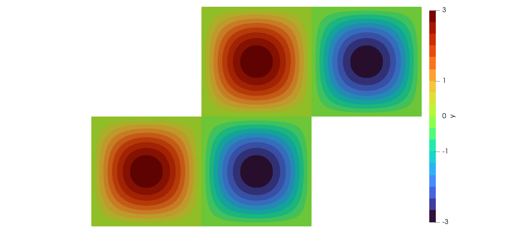

A Semi-Linear Problem
In the following we discuss a non-linear example. The so-called standard, semilinear PDE given by
\[\begin{aligned} -\Delta y + y^3 = f &\quad \text{in}\; \Omega\\ y = 0 &\quad \text{on}\; \Gamma. \end{aligned}\]
The variational form reads as follows: Find $y \in H_0^1(\Omega)$ such that
\[\int_\Omega \nabla y \cdot \nabla v\, dx + \int_\Omega y^3 v\, dx = \int_\Omega f v\, dx\]
for all $v \in H_0^1(\Omega)$.
Note that this is a non-linear equation in $y$. In order to apply Newton's method we have to differentiate with respect to $y$.
The linearization evaluated in $y$ in direction $w$ is given by
\[\int_\Omega \nabla w \cdot \nabla v\, dx + 3 \int_\Omega y^2 w v\, dx.\]
Consequently, one step of Newton's method is given by the solution of the variational problem: Find $w \in H^1_0(\Omega)$ such that
\[\int_\Omega \nabla w \cdot \nabla v\, dx + 3 \int_\Omega y^2 w v\, dx = -\int_\Omega \nabla y \cdot \nabla v\, dx - \int_\Omega y^3 v\, dx + \int_\Omega f v\, dx\]
for all $v \in H_0^1(\Omega)$.
We thus introduce the function assemble_cubicterm and assemble_cubicderivativematrix in order to assemble the source term involving $y^3$ and the matrix with $y^2$, respectively.
Most of the code is similar to the Poisson example. We thus illuminate what is required additionally. The function semilinear evaluates Newton's method for the problem described above with a tolerance tol:
using MinFEM, LinearAlgebra
function semilinear(mesh::Mesh, L::AbstractMatrix, M::AbstractMatrix,
s::AbstractVector, boundaryIndices::Set{Int64};
tol::Float64=1e-10, maxIterations::Int64=10)
y = zeros(mesh.nnodes)
pde = PDESystem(A=L, b=M*s, bc=zeros(mesh.nnodes), DI=boundaryIndices)
for i = 1:maxIterations
pde.A = L + assemble_cubicderivativematrix(mesh, y)
pde.b = -L*y + M*s - assemble_cubicterm(mesh, y)
refresh!(pde)
solve!(pde)
y += pde.state
res = norm(pde.state)
if res < tol
println("It. $i: $res < $tol")
println("Semi-linear routine converged.")
break
else
println("It. $i: $res ≥ $tol")
if i == maxIterations
println("Semi-linear routine failed.")
println("Maximum number of iterations reached.")
end
end
end
return y
endThe rest of the code is then similar to the Poisson problem:
mesh = import_mesh("../meshes/Zshaped.msh")
L = assemble_laplacian(mesh)
M = assemble_massmatrix(mesh)
f(x) = 3*2*pi^2*sin(x[1]*pi)*sin(x[2]*pi) + (3*sin(x[1]*pi)*sin(x[2]*pi))^3
s = evaluate_mesh_function(mesh, f)
boundary = select_boundaries(mesh)
boundaryNodes = extract_nodes(boundary)
y = semilinear(mesh, L, M, s, boundaryNodes)
write_to_vtk([y, s], mesh, ["y","s"], "semilinear")In Paraview, the visualization should then look similar to the following:
